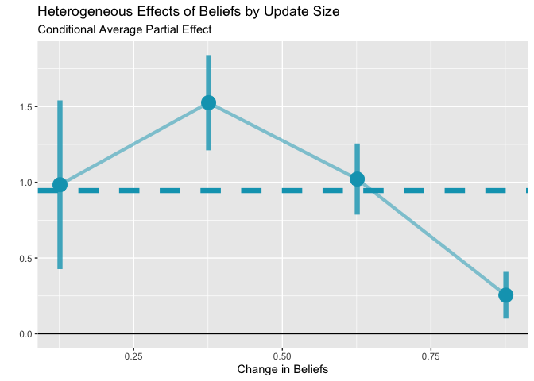

If you’re reading this, you’ve found the pre-release version of this package. Please check this repo frequently for updates. Please open an issue if you find a bug!
This R package implements the Local Least Squares (LLS) estimator for identifying causal effects in information provision experiments. The LLS estimator consistently estimates Average Partial Effects (APE) even when there is strong dependence between belief updating and belief effects.
Installation
PRE-RELEASE
You can directly install lls from the source code (i.e. the contents of this repo). To do so, save the lls folder somewhere on your computer and then you can install from the source with install.packages.
The instructions to install from lls_<version>.tar.gz are identical.
# if installing from the source **folder**
install.packages("path/to/lls", repos = NULL, type = 'source')
# or more simply from the .tar.gz
install.packages("path/to/lls_<version>.tar.gz")When the package is live, you can install the most recent version of lls from GitHub with:
Quick Start
# Basic usage - Active/Passive Control
result <- iv.lls(
dat = your_data,
y = "outcome_variable",
x = "posterior",
r = "learning_rate_variable",
control.fml = "~ prior + other_controls"
)
# Panel Design
result <- panel.lls(
dat = your_data,
dy = "outcome_change",
dx = "belief_change"
)
# View results and plot
summary(result)
plot(result)A Simple Example with Simulated Data
The lls package comes with a simulated dataset info.sim to highlight how the syntax works and to make some example plots.
# Load the package
library(lls)
library(data.table)
# Load packaged simulated data
data(info.sim)
setDT(info.sim) # ensure data.table
info.sim[, alpha_est := (posterior - prior) / (signal - prior)]
# Estimate using IV mode
est <- iv.lls(info.sim, y = "Y", x = "posterior", r = "alpha_est",
bandwidth = 0.05, control.fml = "prior",
bootstrap = TRUE, bootstrap.n = 100)
#> Bootstrapping with 100 iterations
# Print summary
print(est)
#> Local Least Squares (LLS) Estimation
#> ====================================
#>
#> Average Partial Effect (APE):
#> Estimate: 0.9454
#> Std. Err: 0.0878
#> t-value: 10.7631
#> p-value: <0.001
#>
#> Normal CI (95%): [ 0.7733, 1.1176]
#> Percentile CI (95%): [ 0.7574, 1.0951]
#>
#> Estimation Details:
#> Bandwidth: 0.0500
#> Bootstrap reps: 100
#> Observations: 500
#> Support points: 500There is a plot function for lls objects. It returns a ggplot object, so you can customize it further with standard ggplot2 functions.
library(ggplot2)
plot(est) +
labs(title = "Heterogeneous Effects of Beliefs by Update Size",
x = "Change in Beliefs",
y = "",
subtitle = "Conditional Average Partial Effect")
Citation
If you use this package, please cite the working paper:
Balla-Elliott, Dylan (2025). “Identifying Causal Effects in Information Provision Experiments.” arXiv:2309.11387